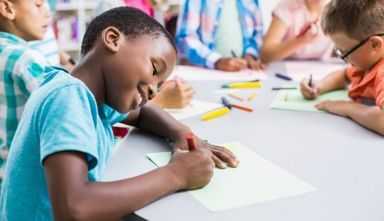
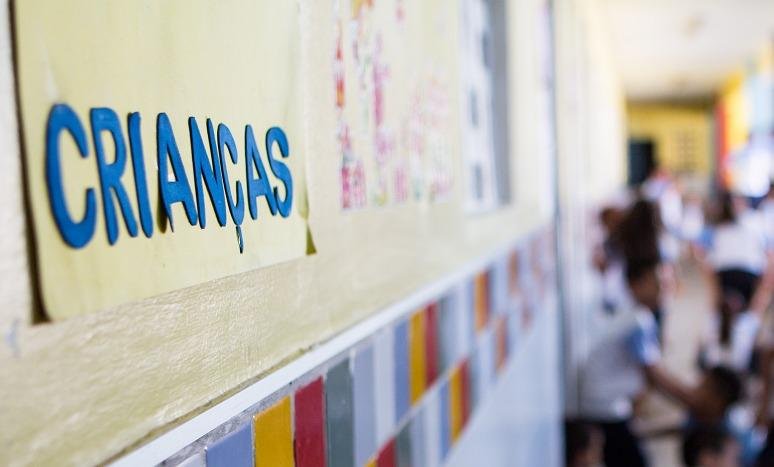

Professora de 71 anos morre após ser esfaqueada por aluno em escola de SP
O ataque à faca em uma escola estadual de São Paulo, nesta segunda-feira (27), no qual uma professora de 71 anos foi morta, marca ao menos o 16º caso em escolas brasileiras nos últimos 20 anos. De acordo com um levantamento feito pelo Instituto Sou da Paz no final de novembro do ano passado, desde 2003 o Brasil registrou 11 episódios de ataques com armas de fogo em escolas brasileiras. Além disso, a CNN levantou ao menos cinco episódios de violência no ambiente escolar – incluindo o desta segunda-feira – utilizando também outros tipos de arma, como facas.
O que pode ser feito para proteger escolas e creches de ataques
Criação de grupos terapêuticos e espaços de acolhimento em escolas; Orientação aos profissionais da educação e à comunidade sobre como identificar e atuar caso seja identificado uma iminência de um ataque; Presença permanente de psicólogos e orientadores educacionais no âmbito escolar, fortalecendo as relações entre a escola e a comunidade, e trazendo discussão sobre as violências (misoginia, racismo, LGBTQIA+fobia, islamofobia, antissemitismo, etc) e seus enfrentamentos e prevenções; Estabelecimento, junto aos profissionais da educação, de mecanismos para atuar de forma preventiva dentro do ambiente escolar.
INCENTIVO AOS CUIDADOS COM A SAÚDE MENTAL
O psicólogo clínico e escolar, Carlos Augusto Souza, destaca que “as escolas não estão apartadas, pelo contrário, elas são os primeiros contatos de abertura social da célula familiar. São de diversas formas afetadas pelas realidades violentas promovidas pela sociedade de forma generalizada, assim como pelas famílias, que estão passando por índices crescentes de violência”.
Hoje precisamos de ampliação urgente dos campos de acesso à saúde mental, que foram sucateados e esquecidos no governo anterior, e que, mais do que nunca, precisam ser reerguidos e trazidos para um âmbito de importância". CARLOS AUGUSTO SOUZA Psicólogo clínico e escolar
A psicopedagoga do Centro Inclusivo para Atendimento e Desenvolvimento Infantil (CIADI), Luciana Bem destaca que a escola é reflexo da sociedade, e “a partir do momento que situações são apresentadas em espaços de aprendizado e convivência, demonstra-se o quanto a sociedade precisa ser notada enquanto sistema formativo de sujeitos e relações”.
Lula, sobre ataque em creche: “Ato de ódio e covardia”
Presidente considera assassinato de crianças em creche de Blumenau uma “monstruosidade inaceitável” e mobiliza governo para agir em defesa de estudantes e profissionais da educação. O presidente Lula, membros do governo federal e lideranças do Partido dos Trabalhadores manifestaram, nesta quarta-feira (5), revolta e indignação diante do ataque a uma creche de Blumenau (SC), onde quatro crianças entre 4 e 7 anos foram assassinadas. O atentado foi praticado por um homem de 25 anos, que invadiu a creche particular Cantinho Bom Pastor armado de uma machadinha. Outras cinco crianças foram feridas, e o criminoso foi preso, segundo apuração do site G1.